Seronegative Arthritides (Spondyloarthritis)
- Spondyloarthritis (SpA) = inflammatory arthritis of the spine and SI joints, ± peripheral joints, RF and anti-CCP negative. The family: ankylosing spondylitis (the prototype), psoriatic, reactive, IBD-associated, juvenile and undifferentiated SpA, and acute anterior uveitis.
- Inflammatory back pain: onset < 40, insidious, > 3 months, morning stiffness > 60 min, night pain, better with activity, no neuro deficits. Mechanical: any age, acute, worse with activity, stiffness < 30 min.
- AS starts in the sacroiliac joints (bilateral, earliest erosion on the iliac side) and ascends; new bone makes thin syndesmophytes and a bamboo spine. HLA-B27 in > 90% of white patients but also 8% of the population. X-ray negative + MRI positive = non-radiographic axial SpA.
- Psoriatic arthritis: 5 patterns (asymmetric oligo > 50%, axial, RA-like, DIP, mutilans), nail changes in 80%, dactylitis, pencil-in-cup, bulky “jug-handle” syndesmophytes. Reactive arthritis: 1–3 weeks after GI (Salmonella, Shigella, Campylobacter) or GU (Chlamydia) infection; conjunctivitis, urethritis, arthritis; keratoderma blennorrhagicum.
- Treatment: physio for all, NSAIDs (indomethacin), then TNF or IL-17 inhibitors. Conventional DMARDs don't work on the spine (peripheral only). PsA: methotrexate treats skin and joints; avoid hydroxychloroquine (psoriasis flares); IL-12/23 inhibitors don't work on axial disease.
Learning Objectives
- Determine a differential for oligo- and polyarthritis, including seronegative and seropositive inflammatory arthropathies.
- Compare the epidemiology, clinical features and joint distributions of rheumatoid arthritis and the seronegative spondyloarthropathies; identify their extra-articular manifestations.
- Describe HLA-B27 and the inflammatory tests: when to order them and what to expect.
- Outline DMARDs vs biologics and when biologics are considered (you won't be asked to choose a specific biologic).
Three recordings (40 min) by Dr. Sherry Rohekar (rheumatology): spondyloarthritis and AS, psoriatic and reactive arthritis, then exam and treatment. The patterns and serology are in 11.3; enthesitis-related JIA in 11.4.
Spondyloarthritis and Ankylosing Spondylitis
Inflammation of the spine and spinal joints; sometimes only peripheral joints.
The Spondyloarthritis Family
“Seronegative” because rheumatoid factor and anti-CCP are negative. The diseases overlap; ankylosing spondylitis is the prototype.
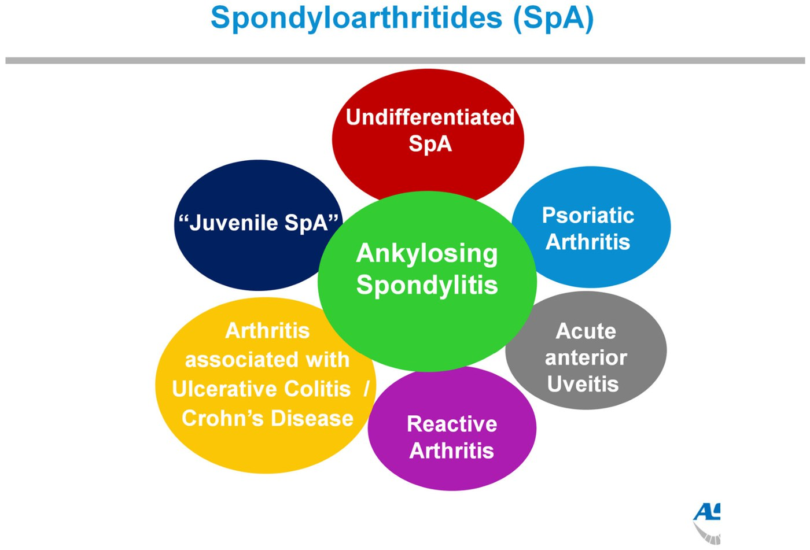
The SpA family, AS at the centre. From the deck.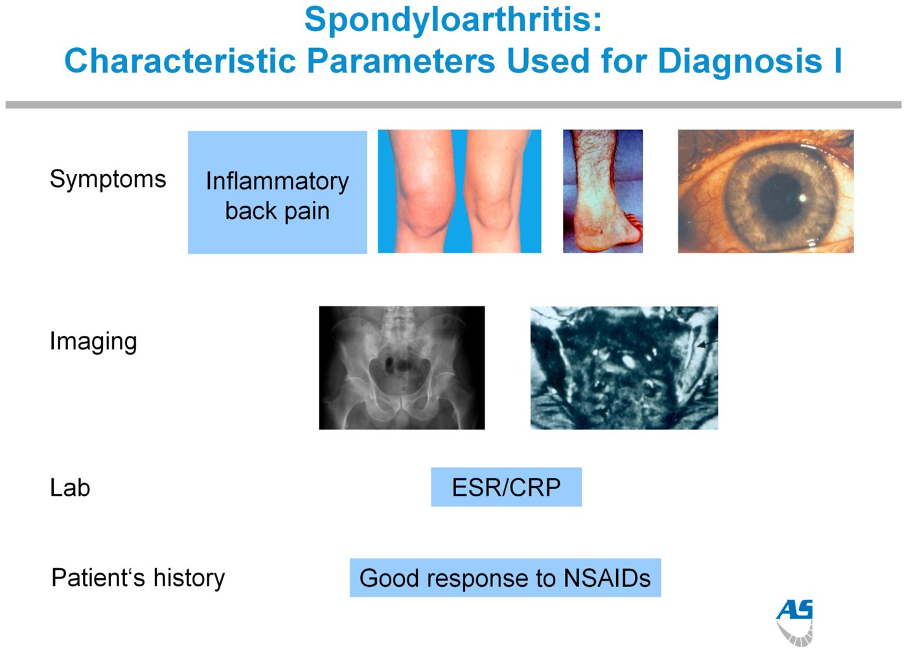
Clues to SpA: symptoms, imaging, inflammatory markers, NSAID response; plus HLA-B27, family history and associated diseases (infection, psoriasis, Crohn's/colitis). From the deck.Inflammatory vs Mechanical Back Pain
| Inflammatory | Mechanical | |
|---|---|---|
| Age of onset | < 40 (late teens, 20s) | Any age |
| Onset | Insidious | Acute |
| Duration | > 3 months | < 4 weeks |
| Morning stiffness | > 60 min | < 30 min |
| Night pain | Yes, especially the second half of the night | No |
| Activity | Improves | Worsens |
| Exam | SI joint tenderness, loss of mobility in all planes, reduced chest expansion | No SI tenderness, abnormal flexion, normal chest expansion |
| Neuro deficits | Unlikely | Possible (sciatica) |
The module's knowledge check: of the options, only morning stiffness > 60 minutes marks inflammatory pain (worse with activity, onset > 45 and neuro deficits point the other way). Mechanical back pain is in Week 7.
Ankylosing Spondylitis
Greek ankylos (bent) + spondylos (vertebra). An autoimmune attack on the spinal joints that starts in the SI joints and ascends; the inflammation triggers new bone, which fuses the spine into a rigid column (bamboo spine) and, untreated, the “question-mark” posture.
| Epidemiology | |
|---|---|
| HLA-B27 | In > 90% of white AS patients, 50–80% of non-white; but also 8% of the general Caucasian population, so the gene alone isn't AS. HLA-B27 positive = 50–100× relative risk. |
| Twins | 60% concordance in identical twins, 20–25% in HLA-B27-positive non-identical twins |
| Prevalence | Up to about 1–1.4% |
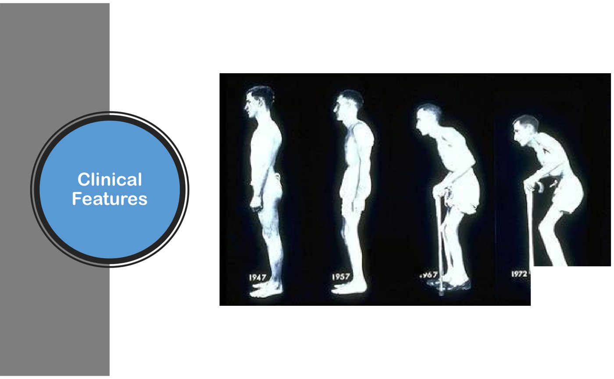
Untreated AS over 25 years: the progressive “question-mark” posture. From the deck.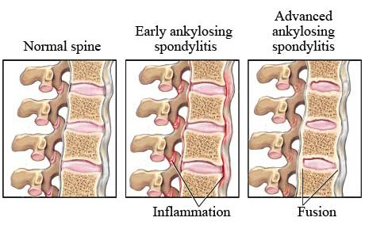
Normal, early (inflammation), advanced (fusion). From the deck.| Classification | Criteria |
|---|---|
| Modified New York (1984) (older; still comes up) | Radiographic sacroiliitis (grade ≥ 2 bilateral or 3–4 unilateral) + ≥ 1 clinical criterion: back pain > 3 months better with exercise not rest; limited lumbar motion; limited chest expansion |
| ASAS axial SpA (current) | Entry: back pain ≥ 3 months, onset < 45. Then sacroiliitis on imaging + ≥ 1 SpA feature, or HLA-B27 + ≥ 2 SpA features |
SpA features: inflammatory back pain, arthritis, enthesitis (heel), uveitis, dactylitis, psoriasis, Crohn's/colitis, good NSAID response, family history, HLA-B27, raised CRP.
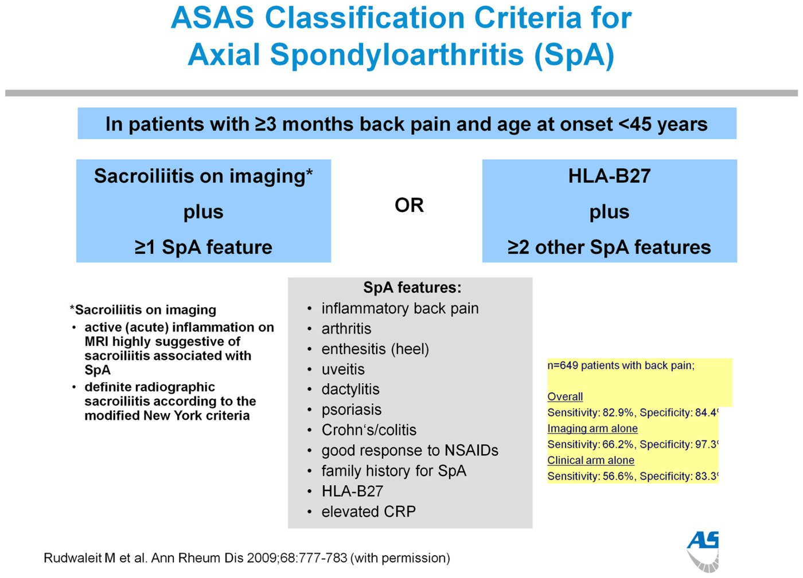
Sacroiliitis and the Spine on Imaging
- Sacroiliitis is usually bilateral and symmetric, in the synovial lower two-thirds of the joint. Earliest change: erosion on the iliac side (thinner cartilage) → “pseudowidening” → sclerosis → complete fusion (ankylosis).
- Spine: thin, marginal syndesmophytes bridge the vertebrae → bamboo spine.
- Non-radiographic axial SpA: no diagnostic SI changes on x-ray but diagnostic MRI (bone marrow edema). “X-ray negative, MRI positive.”
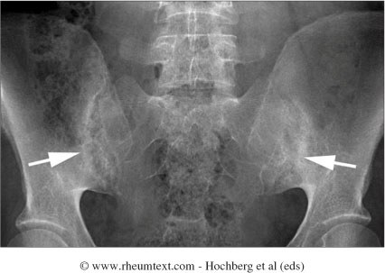
Bilateral sacroiliitis going on to fusion (arrows). Rheumtext, via the deck.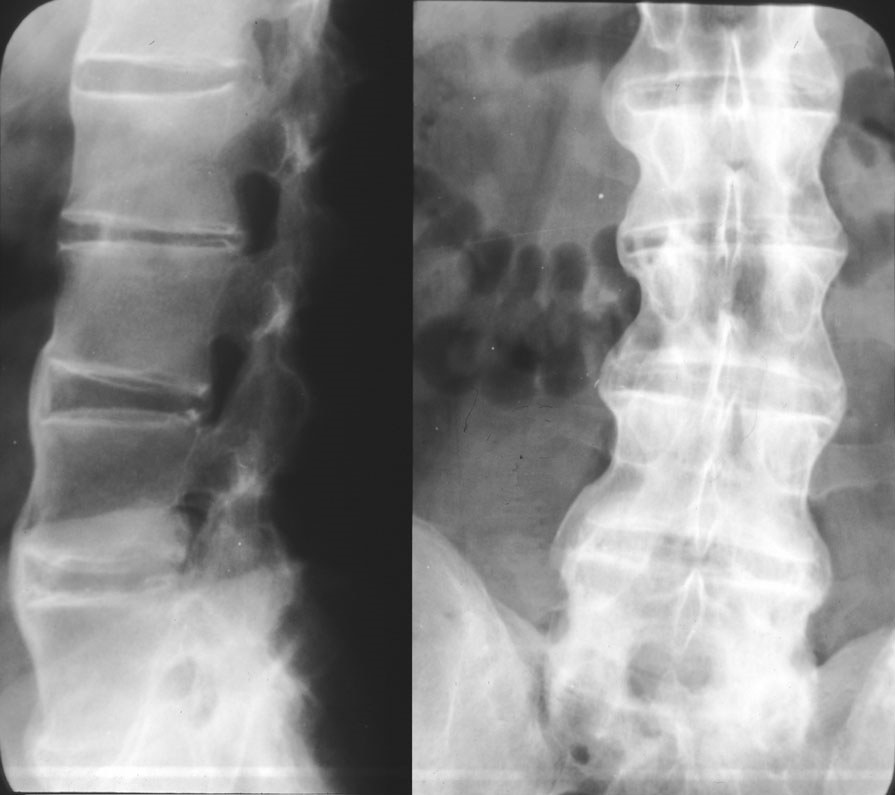
Bamboo spine: thin, elegant syndesmophytes. From the deck.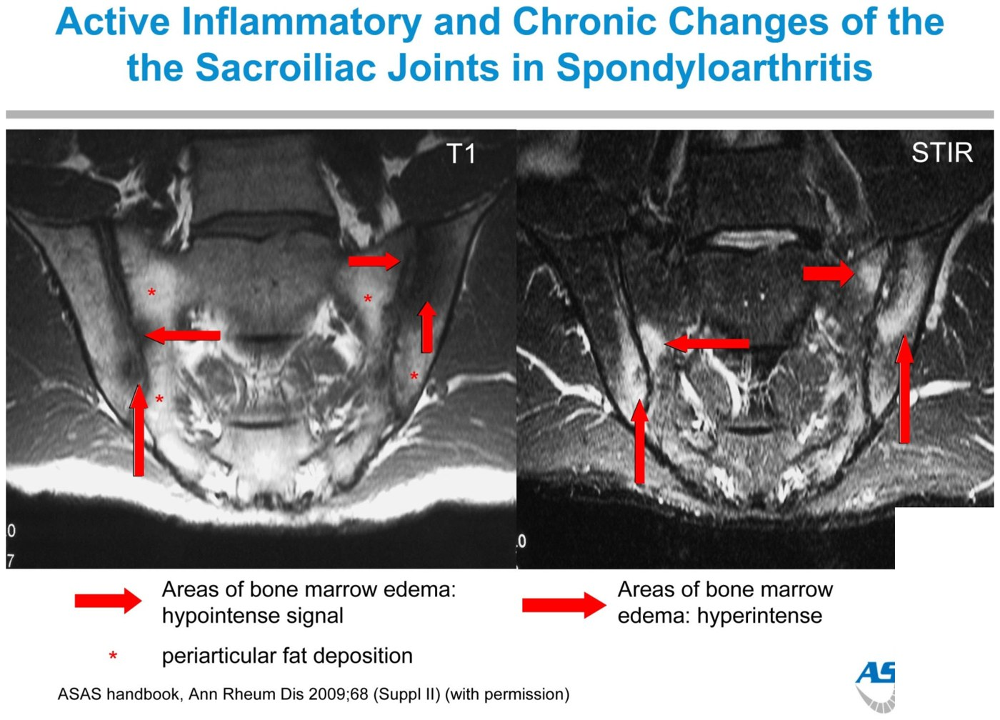
Enthesitis and Extra-articular Disease
An enthesis is where ligament, tendon or capsule inserts into bone; enthesitis inflames it, ending in new bone or fibrosis. Sites: SI joints, discs, manubriosternal joint, pubic symphysis, iliac crests, trochanters, patellae, clavicles, and the calcaneus (Achilles insertion and plantar fascia).
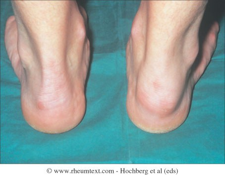
| AS is more than back pain (the deck's “ANKSPOND”) | |
|---|---|
| Aortic | Aortic insufficiency, ascending aortitis, conduction abnormalities, pericarditis (long-standing disease) |
| Neurologic | Atlantoaxial subluxation, cauda equina syndrome |
| Kidney | Amyloidosis; chronic prostatitis |
| Spine | Cervical fracture (the new bone is disorganized and brittle), spinal stenosis, osteoporosis |
| Pulmonary | Upper lobe fibrosis; restrictive defect (rigid chest) |
| Ocular | Anterior uveitis in 25–30% |
| Nephropathy | IgA nephropathy |
| Discitis | Spondylodiscitis |
| Also | Microscopic colitis (terminal ileum, colon) in 30–60% |
Peripheral arthritis in AS is usually a lower-limb oligoarthritis (a knee, an ankle), and can come before the back pain. Knowledge check: nasal ulcers are not a SpA feature (uveitis and IBD are).
Psoriatic and Reactive Arthritis
Two more members of the family.
Psoriatic Arthritis
- Psoriasis: thick, red, silvery-scaled plaques on extensor surfaces, scalp, genitals, gluteal cleft; nail changes. Look for hidden psoriasis: umbilicus, scalp, behind the ears, perianal, nails.
- Psoriasis comes first in 67%; arthritis first or at the same time in 33%.
- Psoriasis in 1.2% of people; PsA in 5–7% of those with psoriasis; axial in 2%. First-degree relatives 50× more likely. HLA-B38, B39, DR4, B27.
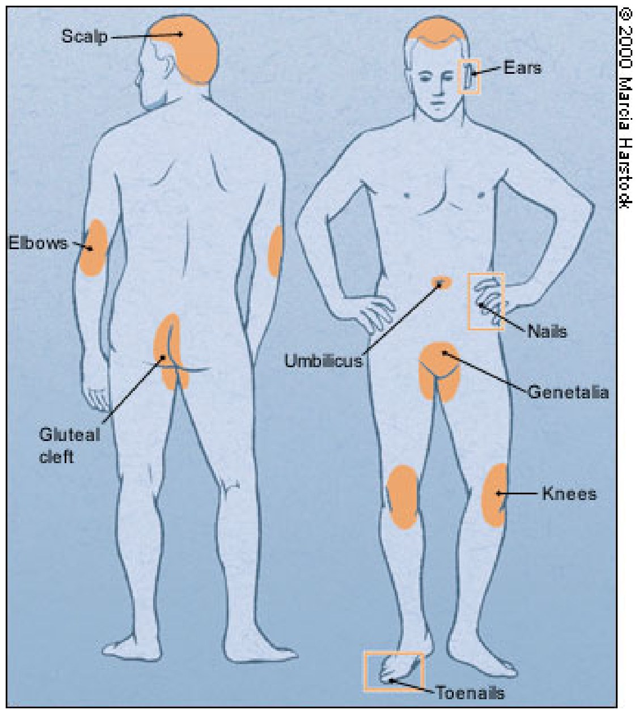
Where to look for psoriasis. From the deck.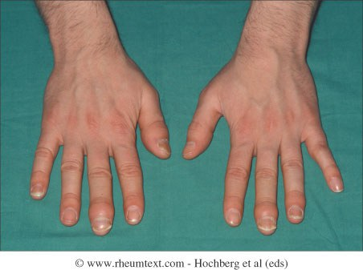
DIP-predominant PsA with nail changes on the same fingers. Rheumtext, via the deck.| Pattern | Share | Notes |
|---|---|---|
| Asymmetric oligoarthritis | > 50% | Usually lower limbs |
| Axial | 20–40% | Like AS but often asymmetric (one SI joint) |
| Rheumatoid-like polyarthritis | 15–25% | MCPs, PIPs, ulnar deviation |
| DIP-predominant | 5–10% | Goes with nail psoriasis (the nail bed and DIP form one enthesis complex) |
| Arthritis mutilans | 5% | Rapid destruction, telescoping digits, pencil-in-cup |
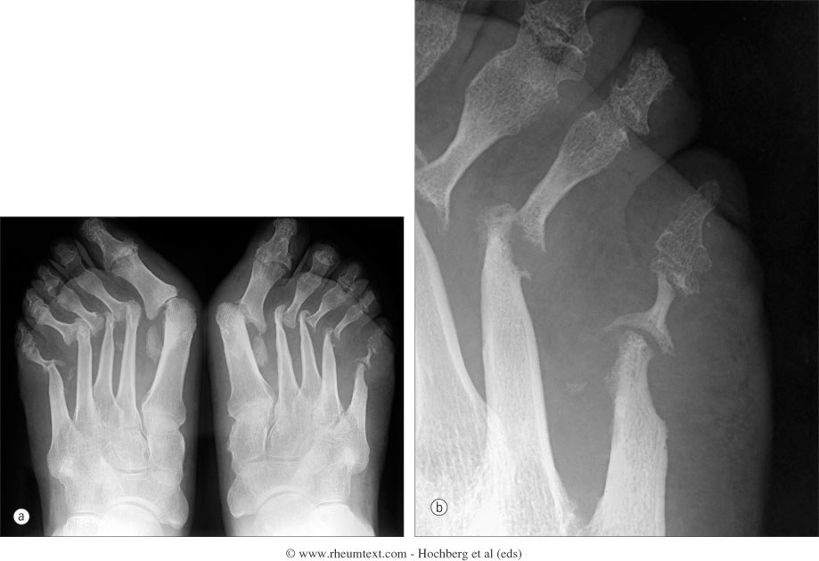
Arthritis mutilans: pencil-in-cup (the pencil sits in an upside-down cup). Rheumtext, via the deck.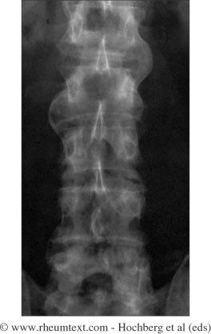
Jug-handle syndesmophytes: large, non-marginal, skipping levels (vs AS's thin, even bamboo spine). Rheumtext, via the deck.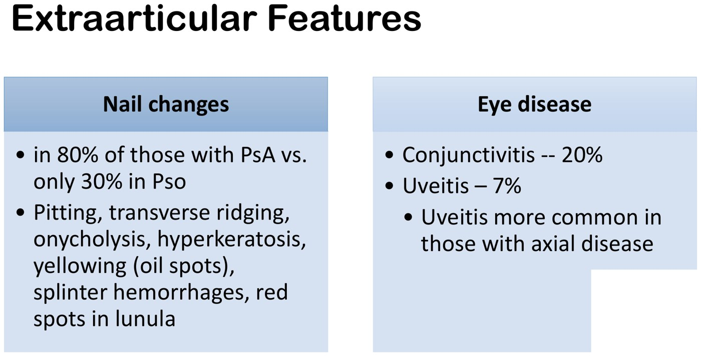
Nails in 80% of PsA (30% of psoriasis alone); conjunctivitis 20%, uveitis 7%. From the deck.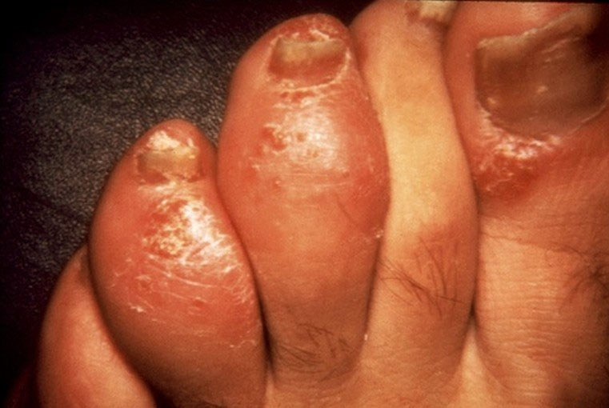
Dactylitis (“sausage digit”). From the deck.| Psoriatic arthritis | Rheumatoid arthritis | |
|---|---|---|
| Sex | M = F | Women about 2:1 |
| Rheumatoid factor | < 10% | About 80% |
| DIP joints | 30–50% | Uncommon |
| Pattern | Asymmetric, “ray” (a whole digit) | Symmetric, “row” (across the hand) |
| SI joints / spine | About 35%, any level | Only the cervical spine, late |
| Other MSK | Enthesitis, dactylitis, periarticular redness | — |
| Extra-articular | Skin, nail dystrophy | Nodules, sicca, vasculitis |
| X-ray | DIP erosions, fluffy periostitis / bony proliferation | Periarticular osteopenia, wrist erosions |
Reactive Arthritis
An inflammatory arthritis in response to a bacterial infection elsewhere (not an infected joint). Formerly “Reiter's syndrome”; the eponym is dropped because Reiter was a Nazi.
| Can't see | Can't pee | Can't climb a tree |
|---|---|---|
| Conjunctivitis or uveitis | Urethritis or cervicitis | Large-joint oligoarthritis, sacroiliitis, enthesitis |
- Triggers: GI Salmonella, Shigella, Campylobacter (also Yersinia); GU Chlamydia trachomatis and other STIs.
- Young men 20–40, 1–3 weeks after the infection. RF negative, HLA-B27-linked.
- Psoriasis-like skin: circinate balanitis (glans) and keratoderma blennorrhagicum (soles, sometimes palms).
- Most settle within 12 weeks; chronic arthritis or sacroiliitis in 15–30%. Treat symptoms; treat chronic disease like chronic arthritis.
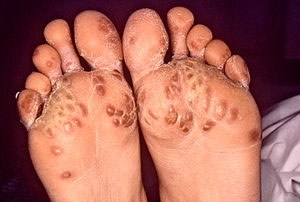
Exam and Treatment
Measuring spinal mobility, then the drugs.
Spinal Mobility Exam
| Test | How | Normal |
|---|---|---|
| Modified Schober (lumbar) | Standing: mark the line between the PSISs (the dimples of Venus) and a point 10 cm above; bend forward maximally; measure | 10 cm opens to about 15 cm |
| Chest expansion (thoracic) | Hands on/behind the head; tape at the 4th intercostal space (now often the xiphisternum); maximal in- minus expiration | About 5 cm |
| Occiput-to-wall (cervical) | Heels and shoulders on the wall, chin level; try to touch the head to the wall (or measure tragus-to-wall) | 0 cm |
Best of two tries for each.
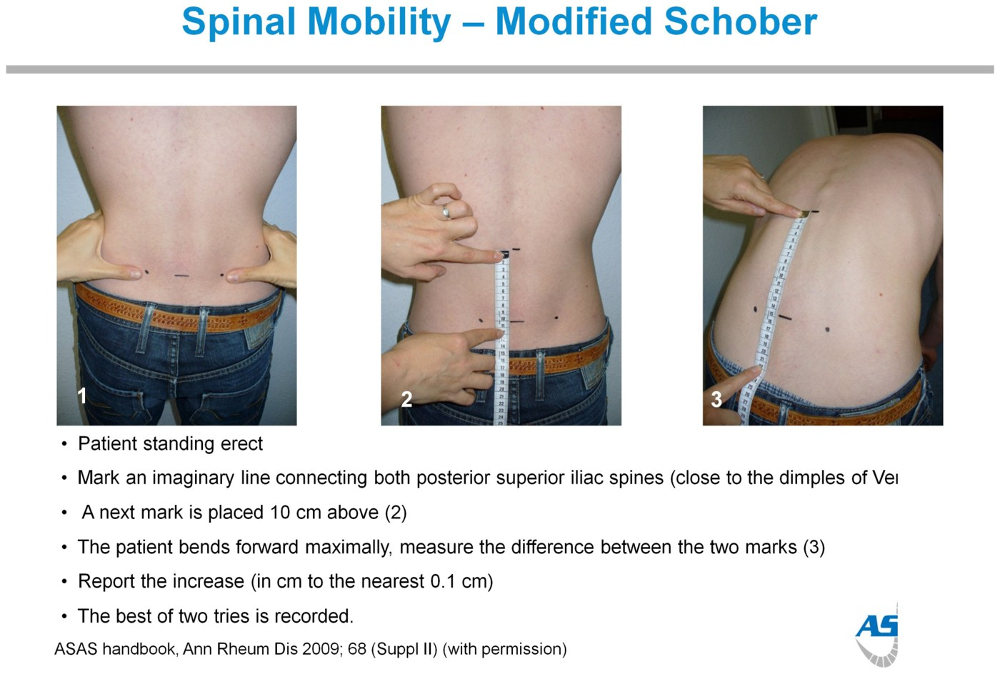
Modified Schober. ASAS handbook, via the deck.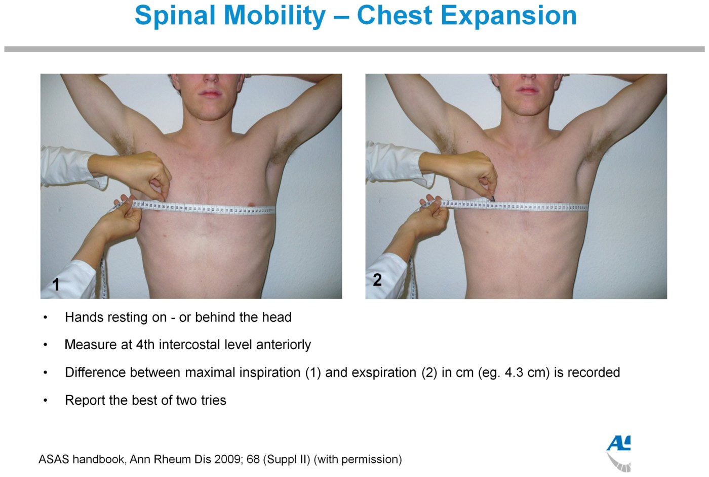
Chest expansion. ASAS handbook, via the deck.Treatment
| Axial SpA | |
|---|---|
| Physiotherapy | For everyone: posture, chest expansion, fewer deformities |
| NSAIDs | Mild–moderate symptoms; possibly disease-modifying; indomethacin works best. Watch GI effects, and NSAIDs can flare IBD (check with GI) |
| Conventional DMARDs | Don't work for spinal disease: only for predominantly peripheral arthritis |
| TNF inhibitors | Very effective (symptoms, range of motion, fatigue); likely disease-modifying early |
| IL-17 inhibitors | Very effective; disease modification not yet known |
| Psoriatic arthritis | |
|---|---|
| Conventional DMARDs | Methotrexate (treats skin and joints), sulfasalazine, leflunomide; limited evidence against x-ray progression. Hydroxychloroquine is often avoided (case reports of severe psoriasis flares) |
| Apremilast | PDE4 inhibitor: skin and joints, slows x-ray progression, weaker than biologics |
| TNF inhibitors | Axial and peripheral; skin, joints, enthesitis, dactylitis, nails; slow x-ray damage |
| IL-12/23 inhibitors | Great for skin, good for peripheral joints, not axial disease |
| IL-17 inhibitors | Excellent for skin; axial and peripheral; maybe best for enthesitis and dactylitis |
| JAK and IL-23 inhibitors | Peripheral joints (and skin); axial effect uncertain |
Built from Dr. Sherry Rohekar's “Spondyloarthritis”, “Psoriatic Arthritis and Reactive Arthritis” and “Physical Exam and Treatment” decks, their three recordings and the module's three knowledge checks. The lecturer's webcam inset is cropped out of the slides; the circinate balanitis photo is left out. Notes: the deck's AS prevalence is “0.1% to 1.4%”; the recording says 1–1.4%. The PsA-vs-RA table (from Rheumatology, Hochberg) lists RA's sex ratio as “M:F 2:1”; RA is commoner in women, so the page writes it that way. The deck's mnemonic ends in D for discitis; the recording lists IgA nephropathy under N.